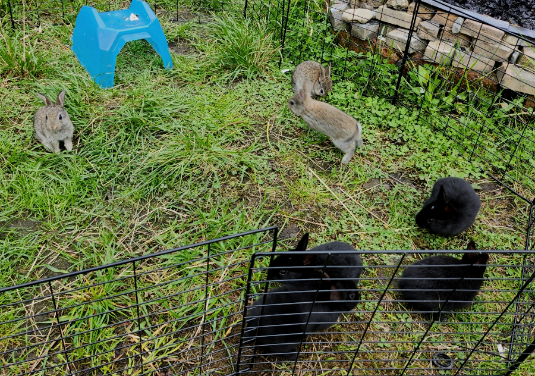
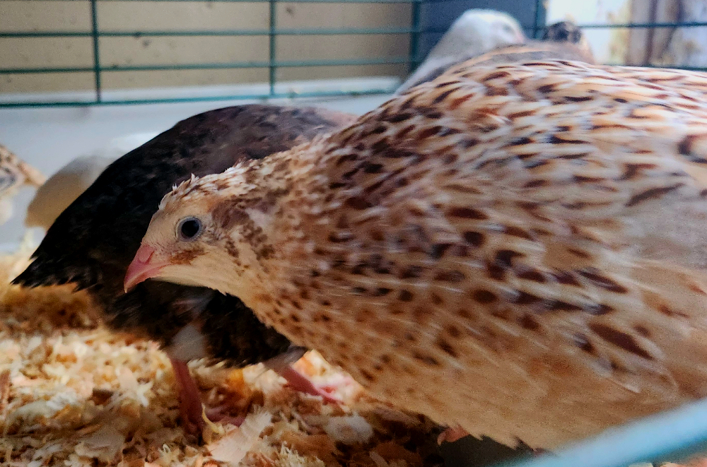
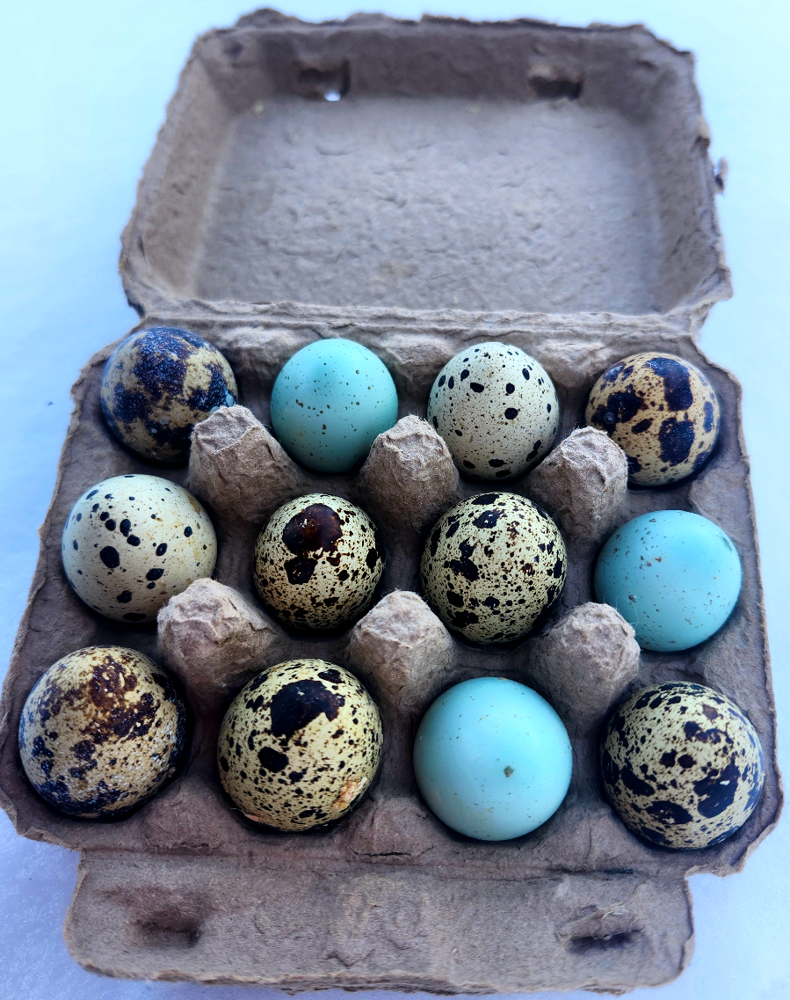

Cultivating Food Sovereignty for Gustavus
Free workshop series at the Gustavus Public Library - Summer 2026

Meat Rabbit Husbandry & Collaborative Cage Building
45-minute talk on raising rabbits, followed by hands-on rabbit handling and health checks. Participants will collaboratively build a professional-grade rabbit cage, learning skills to build their own at home.

Community Carrot Tasting & Seed Saving Workshop
Third annual carrot tasting featuring 14 varieties from Johnny's Selected Seeds. Learn seed saving techniques and help select top-performing varieties for the community seed bank.
When: Monday preceding the Harvest Festival
Where: Gustavus Community Center

Rabbit & Poultry Show at Gustavus Harvest Festival
Public exhibition at the free annual Gustavus Harvest Festival. Includes educational judged show with ribbons and a family-friendly "Critter Race" celebrating local livestock.
Features: Durable judging coops, ribbons, community engagement activities
🎓 Grant Funded: This workshop series is made possible by a $1,600 RurAL CAP Foundation grant awarded to the Gustavus Public Library.
👩🌾 Project Lead: Geneva Mottet, Master Gardener (2023) with 20 years rabbit husbandry experience
📞 Contact: 775-343-8113 | gjmottet@alaska.edu
Coturnix Quail Eggs & Chicks
Fresh, fertile eggs and healthy chicks from our homestead
📍 Location Note: We're based in Gustavus, Alaska from April to October. All garden photos are from our Gustavus homestead. Quail eggs are available year-round wherever we are!

Fresh Quail Eggs
Nutrient-rich Coturnix quail eggs from our happy, free-range quail. These miniature eggs pack a nutritional punch with rich flavor.
• Eggs in incubator: February 1
• Expected hatch: February 17
• Chicks available: March 10
Note: All eggs sold are fertile. Can be used for eating or hatching purposes.
Fertile Eggs Available NowAvailable wherever we are - Gustavus (April-Oct) or Fairbanks (Nov-Mar)
Quail Chicks & Adults
Healthy Coturnix quail available at various life stages. Perfect for starting your own backyard quail flock for eggs or meat.
🐣 Chicks (Available March 10):
🐔 Adults (Available end of March):
Genetics: Some chicks from celadon genetics stock - may lay blue eggs!
Benefits: Quiet, low maintenance, excellent egg layers, cold-hardy
Available March 10, 2026Baby rabbits from our Gustavus homestead - Like what you see? Join our rabbit husbandry workshop!
2026 Carrot Tasting & Seed Bank
Our third annual Community Carrot Tasting will feature 14 varieties from Johnny's Selected Seeds. Following the tasting, the top-performing varieties will be added to the free Gustavus Library Seed Bank for community use.
2026 Carrot Varieties
14 varieties selected from Johnny's Selected Seeds catalogue for the 2026 growing season and tasting event.
2026 Tasting Varieties
- Bolero
- Candy
- Orange Fancy
- Napoli
- Mokum
- Romance
- Shin Kuroda
- Sugarsnax 54
- Rubypak
- Deep Purple
- Purple Elite
- Dragon
- Gold Nugget
- Rainbow
Past Carrot Tasting Results
Community-based evaluations help determine the best varieties for our Gustavus growing conditions.
2025 Carrot Tasting - Top Performers
| Rank | Variety | Score | Normalized |
|---|---|---|---|
| 1 | Royal Chantenay | 94 | 3.92 |
| 2 | St. Valery | 95 | 3.80 |
| 3 | Purple Dragon | 82 | 3.57 |
| 4 | Gniff | 84 | 3.50 |
| 5 | Little Fingers | 87 | 3.48 |
| 6 | Bolero Nantes | 79 | 3.29 |
Based on evaluations from 26 community tasters